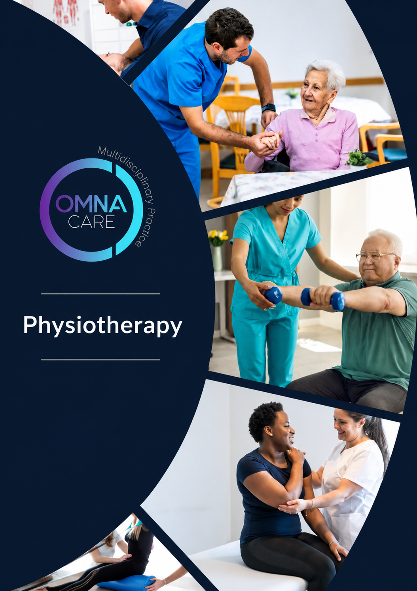
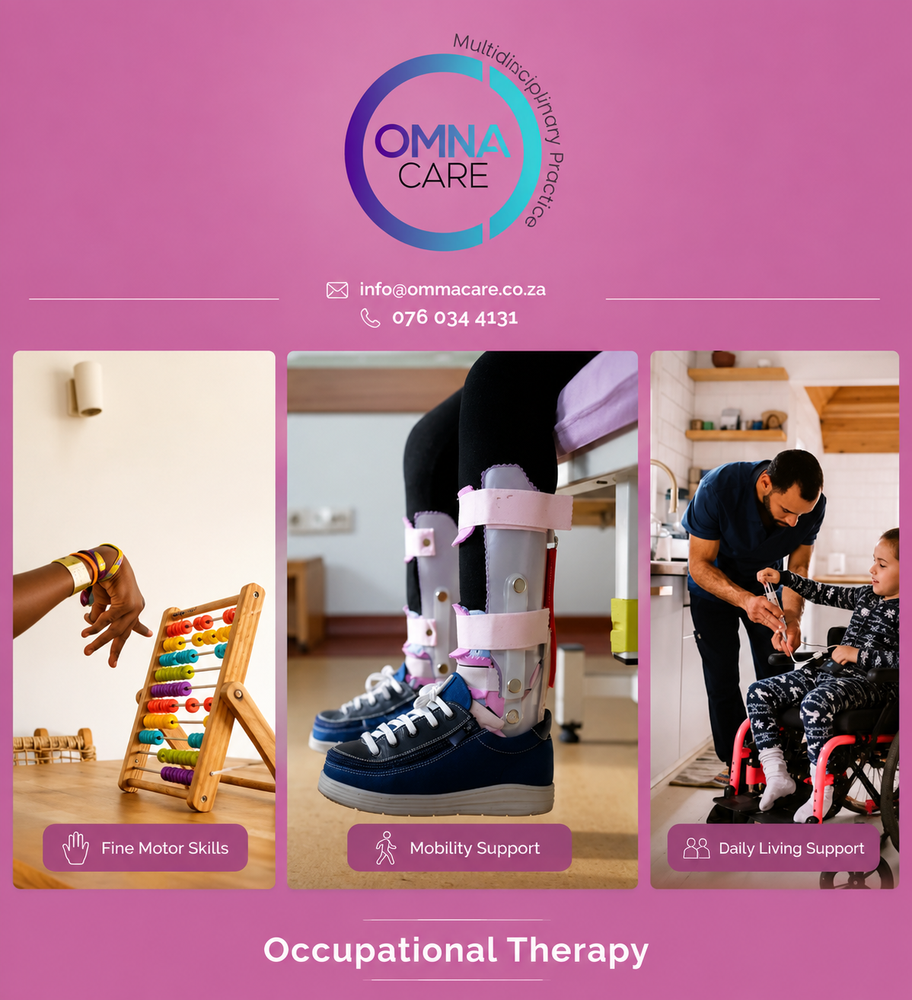
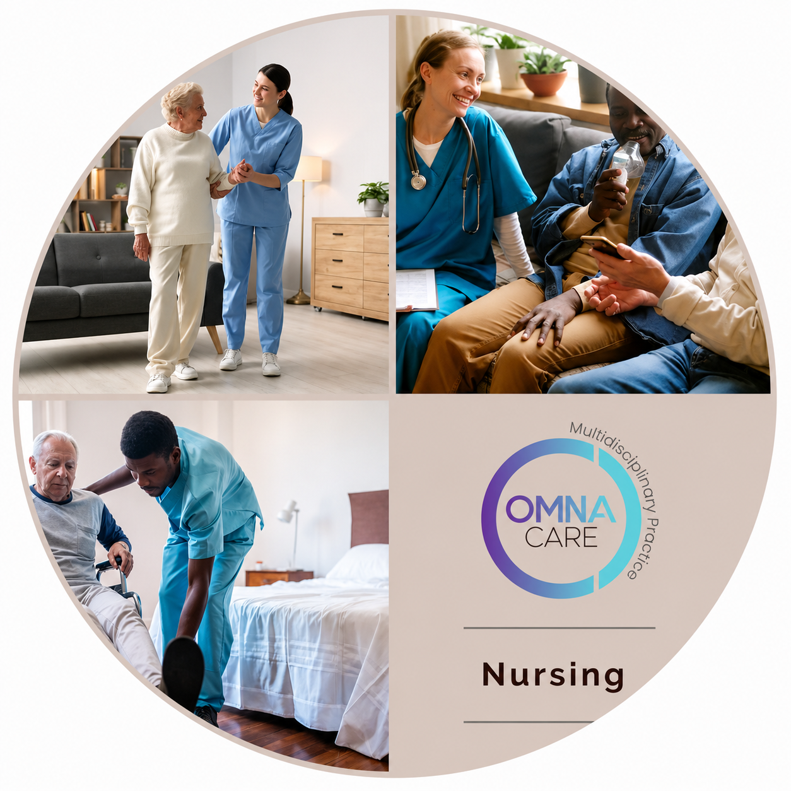
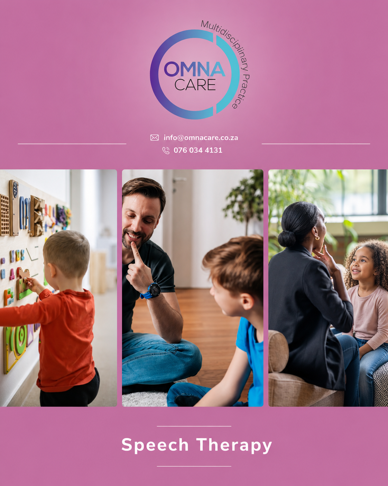

Integrated, patient-centred rehabilitation across South Africa — from hospital discharge to full recovery, in the comfort of home.
Omnacare is a multidisciplinary practice delivering integrated rehabilitation services directly to patients in their homes. Our model is built around accessibility, continuity of care, and real-world recovery — patients receive coordinated input from multiple healthcare professionals without needing to move between facilities.
Whether recovering from surgery, injury, illness, or managing a chronic condition, the objective is clear: restore function, improve independence, and support long-term outcomes in a familiar environment.
Rehabilitation doesn’t need to happen in a facility to be effective. Home-based care allows patients to recover in an environment that supports comfort, consistency, and real functional improvement — reducing the burden of travel, eliminating waiting times, and keeping therapy directly relevant to daily life.
This approach is particularly beneficial for post-hospital recovery, elderly care, neurological conditions, and patients with limited mobility.

Dr. Anoop Narotam is uniquely dual-qualified as both a Medical Doctor and a Physiotherapist, providing patients with an integrated approach that spans diagnosis, rehabilitation, and long-term wellness. His expertise ensures care that is comprehensive, coordinated, and focused on achieving meaningful results.
As Co-Founder and Clinical Director of Omnacare, he is dedicated to making healthcare accessible, seamless, and patient-centred — leading with compassion and precision to help patients heal, recover, and thrive at every stage of their journey.
Faatimah Essop is a skilled Speech Therapist and Audiologist with extensive experience in communication, language, swallowing, and lactation support. She is passionate about restoring independence and confidence for patients of all ages — from newborns with feeding challenges to adults recovering from illness, injury, or developmental conditions.
As Co-Founder and Clinical Director of Omnacare, she plays a central role in delivering holistic, team-based rehabilitation that bridges hospital to home.
Omnacare envisions a future where rehabilitation is no longer fragmented between hospital and home. Recovery begins at the bedside and continues seamlessly into the community, led by one coordinated team that ensures consistency, accountability, and lasting results.
We aim to become South Africa’s most trusted network for end-to-end rehabilitation — guiding patients from inpatient hospital care through outpatient recovery and long-term home-based support.
By setting the benchmark for quality, accessibility, and outcomes, we empower patients to regain dignity and independence, while giving doctors confidence in smooth transitions and funders a sustainable model that reduces readmissions and contains costs.
Omnacare provides seamless rehabilitation across the full continuum of care, from hospital admission through to home-based recovery. Our integrated team of physiotherapists, occupational therapists, speech therapists, and audiologists delivers patient-centred care designed to restore function, independence, and quality of life.
By ensuring continuity from inpatient to outpatient settings, we reduce hospital readmissions, shorten recovery times, and provide measurable value to funders through cost-effective outcomes.



Get in touch and our team will help you take the first step toward home-based rehabilitation.